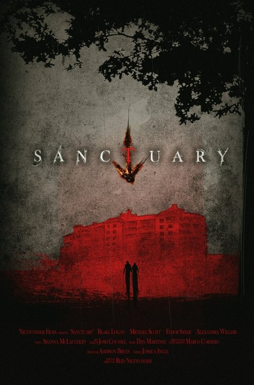
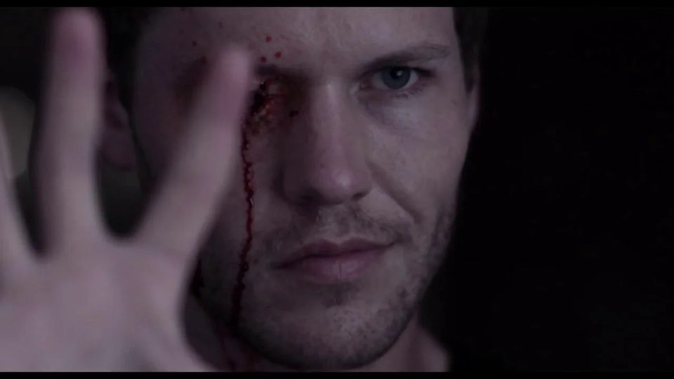

 Sanctuary 2014 feature film. Where to watch Apple TV (opens in a new tab) Prime Video (opens in a new tab) Fandango at Home (opens in a new tab) YouTube (opens in a new tab) IMDb (opens in a new tab) Letterboxd (opens in a new tab)
 Play video: Sanctuary trailer Director Sanctuary trailer Trailer for my 2014 feature. Watch on Vimeo →